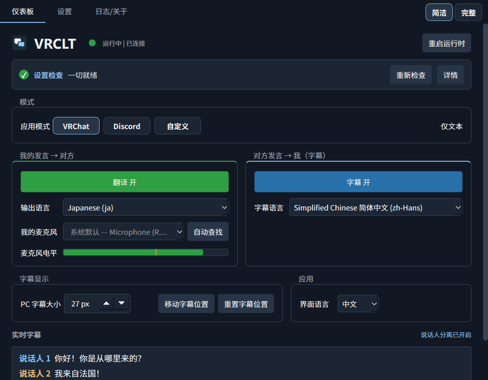
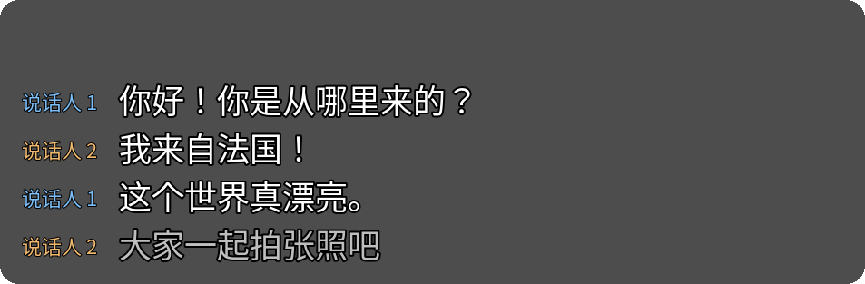
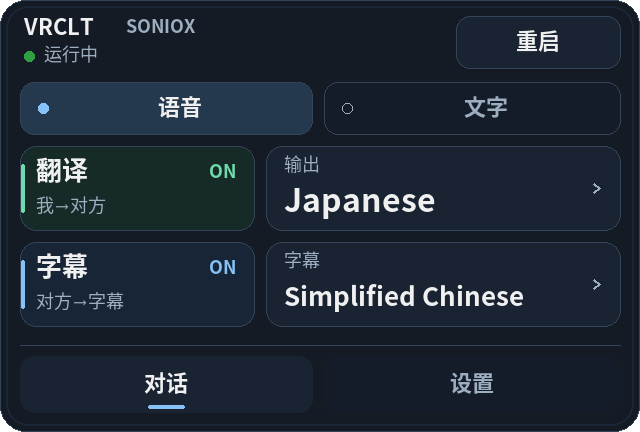
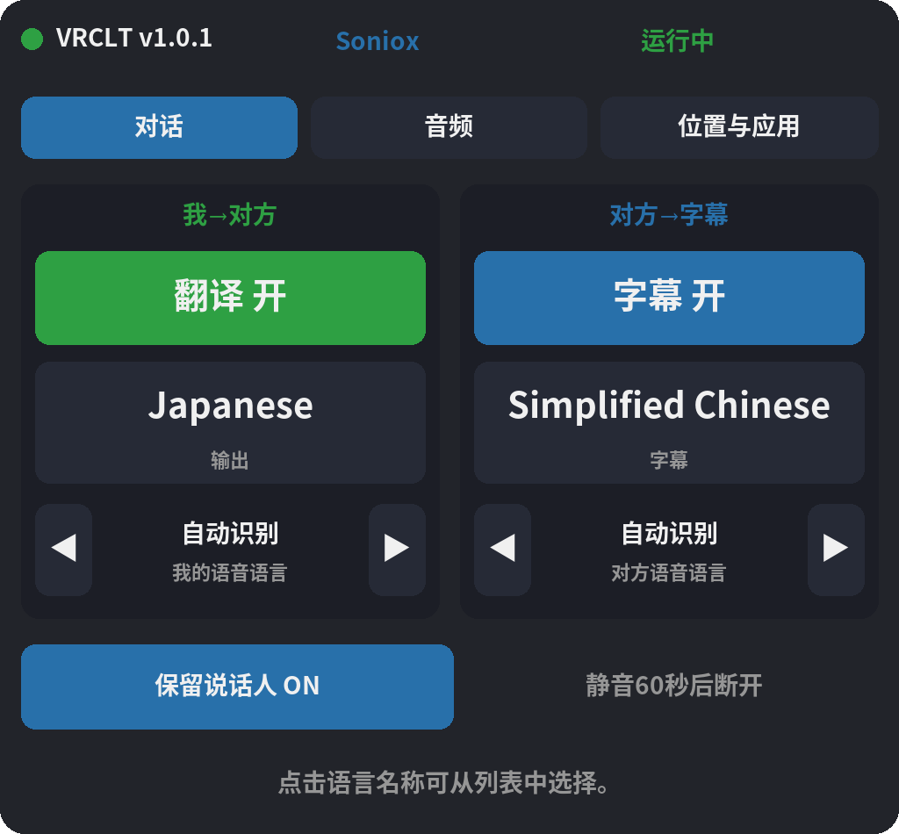

就像是自己學會了另一種語言
對著麥克風說話，翻譯後的語音就會傳入 VRChat 或 Discord。你可以選擇對方的語言。
VOICE TRANSLATION / LIVE SUBTITLES
v1.0 準備中
為 VRChat 和 Discord 提供即時語音翻譯與字幕。透過 Windows 應用程式，將麥克風的聲音轉換為選定的語言。
Windows · 自備 API 金鑰 · 語音輸出需要 VB-Cable

對著麥克風說話，翻譯後的語音就會傳入 VRChat 或 Discord。你可以選擇對方的語言。
將對方的話轉換為選定語言的字幕。在應用程式、桌面或 SteamVR 中都能查看。
透過手腕選單切換語言，在 SteamVR 面板中調整設定，也能將翻譯傳送至 VRChat 聊天框。
Interface / Desktop & VR
從桌面面板到 VR 字幕與手腕選單，查看應用程式的實際介面。



v1.0 預覽。畫面由實際應用程式搭配範例對話產生，並非頭戴裝置內的實拍畫面。應用程式截圖目前顯示簡體中文介面。
Setup / Windows
從 GitHub Releases 下載 Windows 執行檔並開啟。發行版無須安裝 Python。
前往下載選擇翻譯引擎，向對應服務取得 API 金鑰，並填入應用程式設定。服務使用費用另計。
查看翻譯引擎安裝 VB-Cable。將翻譯語音輸出設為 CABLE Input，並將目標應用程式的麥克風設為 CABLE Output。
VB-CableTranslation engines
支援 Gemini Live、Qwen LiveTranslate、OpenAI Realtime 和 Soniox。可用語言、聲音和費用取決於服務與模型。
查看各引擎設定（簡體中文）應用程式採用 MIT 開源授權。翻譯使用你自己的 API 金鑰，服務提供者可能依使用量收費。請在開始前確認費率與餘額。
不需要。僅使用 Windows PC 就能進行語音翻譯並查看桌面字幕。VR 字幕和手腕選單需要 SteamVR。
音訊會傳送至你選擇的翻譯服務。API 金鑰和應用程式設定儲存在本機。使用前請了解對應服務的資料處理政策。
還在準備中。本頁介紹 v1.0 預覽，下載按鈕會連至已公開的最新 GitHub 發行版。新的設定檢查和標誌將隨 v1.0 推出。
在 GitHub 取得已公開的最新版本。v1.0 正在準備中。